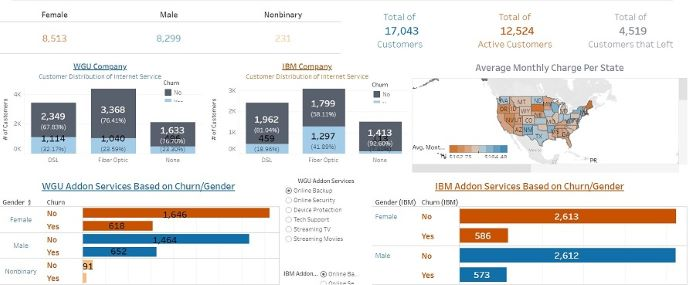

Data Science Jobs Cleanse via SQL
Various SQL statements to perform data cleaning techniques on Data Science Jobs on Glassdoor.
Various SQL statements to perform data cleaning techniques on Data Science Jobs on Glassdoor.
Webscraping project to obtain data representing the top 100 Thai dramas from the years 2000-2023 as noted on a popular web platform called MDL.
Exploration the varying affect of COVID-19 on a global scale with the view of death percentages within SQL.

Data cleaning and visualization project with the use of an interactive dashboard in Tableau to provide a comparsion of a localize and national reaching telecommunication company.
An in-depth predictive model via logistic regression to predict online purchasing intention based on Google Analytics on an ecommerce company.